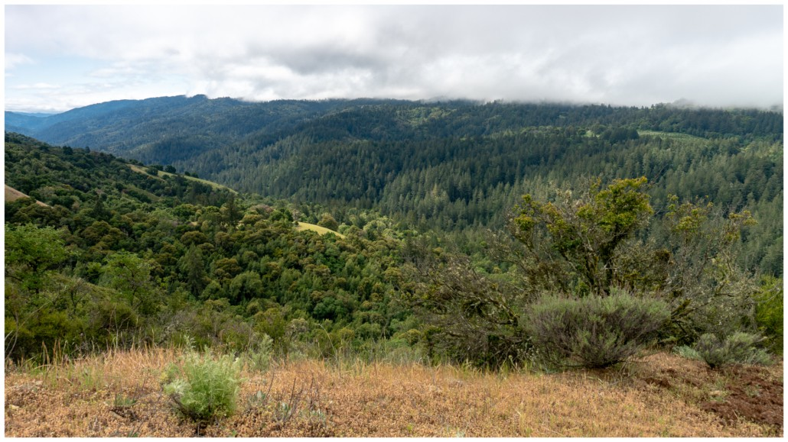

Alliance Francaise Nature Walks
A bilingual field guide to the hikes organized by the Alliance in the Bay Area

Past Hikes
13 hikesKeep the trail details within reach.
Open each location in an interactive OpenStreetMap preview, then scan its QR code or open a pre-filled text message to take the trail link with you. Google Maps, AllTrails and official information remain available in a new tab.
Upcoming walks
Four walks are next on the Alliance programme. Each now has a confirmed date — open its details page for the meeting point, what to bring and the full trail information.
Future Hikes
Ideas for a future Alliance nature walk, evaluated against the group’s comfort, timing and picnic criteria.
The walks, on the map
Compare completed outings and possible future walks across the Bay Area. Both map views show every location together, with Past, Upcoming, Future and All filters.
Select a marker—or a hike in either list—to see its trail details.